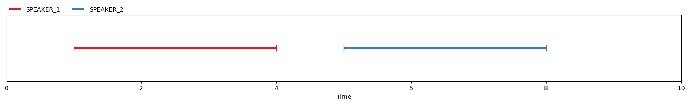
Now, let’s assume that an (automatic) speaker diarization system produces this hypothesis for the same conversation:
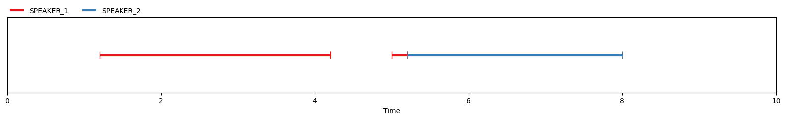
The system made three types of errors:
- missed detection, it missed the beginning of
SPEAKER_1turn around time t=1s; - false alarm: it marked
SPEAKER_1has active when it is not, around time t=4s - confusion: it confused
SPEAKER_2forSPEAKER_1around time t=5s
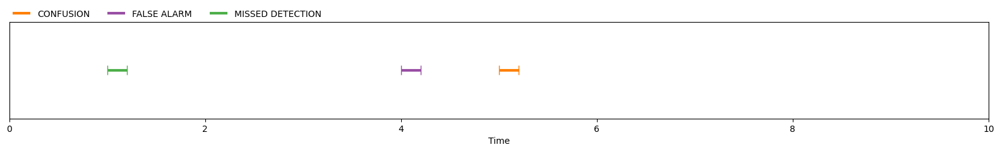
The most common metric used for evaluating speaker diarization systems is the diarization error rate which is defined as the ratio between the total duration of this three types of errors divided by the total duration of speech according to the manual annotation:
\[\mbox{diarization error rate} = \frac{\mbox{missed detection} + \mbox{false alarm} + \mbox{confusion}}{\mbox{total duration of speech}}\]
which you can compute with pyannote.metrics as follows:
metric = DiarizationErrorRate()
der = metric(reference, hypothesis)
print(f"DER = {100*der:.1f}%")DER = 10.0%
A detailed duration breakdown of this value can be obtained using the detailed=True option:
print(metric(reference, hypothesis, detailed=True)){ 'total': 6.0, 'missed detection': 0.19999999999999996, 'false alarm': 0.20000000000000018, 'confusion': 0.20000000000000018, 'correct': 5.6, 'diarization error rate': 0.10000000000000005 }
The above equation becomes:
\[\mbox{diarization error rate} = \frac{\mbox{200ms} + \mbox{200ms} + \mbox{200ms}}{\mbox{6s}} = 10\%\]
“Forgiveness” collars
It is very difficult for (human) annotators to precisely define the start and end time of speaker turns… and even more so in presence of adverse acoustic conditions or overlapping speech. Therefore, the speaker diarization community came up with the notion of “forgiveness collars”: small regions (typically a few hundred milliseconds) centered on the start and end time of every single speaker turns during which systems are forgiven for their mistakes.
In the above conversation, “250ms forgiveness collars” would look like this:
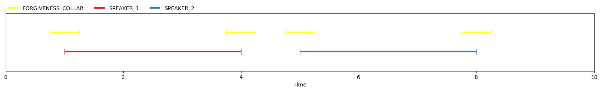
Noticed how every single error made by the automatic system falls within the forgiveness collars?
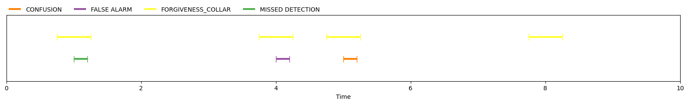
Consequently, evaluating the very same system with forgiveness collars results in a perfect diarization error rate!
der = metric_with_collars(reference, hypothesis)
print(f"DER (with collars) = {100*der:.1f}%")DER (with collars) = 0.0%
No false alarm, no missed detection, no confusion, nothing!
print(metric_with_collars(reference, hypothesis, detailed=True)){ 'total': 5.0, 'missed detection': 0.0, 'false alarm': 0.0, 'confusion': 0.0, 'correct': 5.0, 'diarization error rate': 0.0 }
That is the whole point of collars: forgiving systems for making mistakes in regions were even humans cannot be 100% correct.
Seems reasonable, right? Right? RIGHT?
I don’t like collars! “250ms” collars are not what you think they are!
Did you notice that those “250ms” collars actually are 500ms long? There! You have it! The first reason I don’t like collars!
For some reason, the speaker diarization community decided a long time ago that “250ms” collars actually are 500ms-long regions centered on speaker boundaries: 250ms on the left, 250ms on the right. This has been implemented like this since the good old md-eval.pl Perl (😱) script and nryant/dscore did a good job ensuring that their Python (🤩) version is consistent with it.
When designing pyannote.metrics, I decided to make it clear from the beginning what the overall duration of the collar will be so you should use collar=0.5 to actually be consistent with md-eval.pl “250ms” collar. This is how the above metric_with_collars has been instantiated:
metric_with_collars = DiarizationErrorRate(collar=0.500)I don’t like collars! They depend on annotation guidelines!
A second reason I don’t like collars is that the speaker diarization community somehow hardcoded this 250ms collar duration despite the fact that every benchmarking initiative gives different instructions to their pool of human annotators regarding how to annotate intra-speaker gaps:
- DIHARD evaluation plan says that “small pauses [shorter than] 200 ms by a speaker are not considered to be segmentation breaks and should be bridged into a single continuous segment”;
- VoxConverse guidelines say that “speech segments are split when pauses are greater than [250 ms]”;
- Albayzin 2022 evaluation plan goes even further by requesting that “consecutive segments of the same speaker with a silence of less that 2 seconds […] are considered as a single segment”.
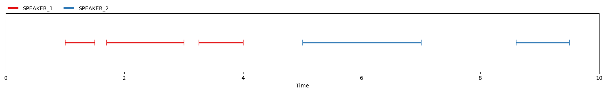
For the above conversation, DIHARD guidelines would lead to the following “reference” annotation:
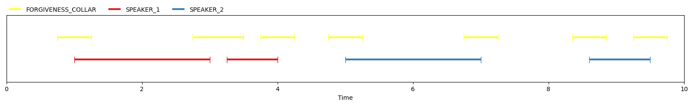
With VoxConverse guidelines, it would look like this:
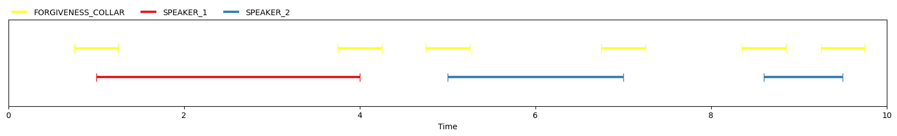
Now, let’s compare those two “reference” annotations, using DIHARD as reference and VoxConverse as hypothesis, and vice-versa, with and without collars:
(metric_with_collars(dihard, voxconverse), metric_with_collars(voxconverse, dihard))(0.0, 0.056818181818181816)(metric(dihard, voxconverse), metric(voxconverse, dihard))(0.04424778761061947, 0.0423728813559322)Diarization error rates are much more stable without collars!
Full disclosure: I agree that this example is 100% made up and a more in-depth analysis should be performed at a larger scale but still… I don’t like collars!
You might argue that those first two reasons why I don’t like collars might be anecdotal (and you might actually be right).
But, brace yourself, I kept the best for the end!
I don’t like collars! They don’t play well with overlapping speech
As automatic speaker diarization systems are getting better and better, diarization error rates on standard benchmarks are getting dangerously close to zero: the winning team of the last VoxSRC 2022 challenge reached a DER (with “250ms” collars) of 4.7% while pyannote.audio pipeline reaches 5.6%.
from pyannote.database.util import load_rttm
references = load_rttm("voxconverse.test.manual.rttm")
hypotheses = load_rttm("voxconverse.test.auto.rttm")metric = DiarizationErrorRate()
metric_with_collars = DiarizationErrorRate(collar=0.500)
for uri in references:
metric(references[uri], hypotheses[uri])
metric_with_collars(references[uri], hypotheses[uri])/Users/hbredin/miniconda3/envs/pyannote-mps/lib/python3.9/site-packages/pyannote/metrics/utils.py:200: UserWarning: 'uem' was approximated by the union of 'reference' and 'hypothesis' extents.
warnings.warn(abs(metric)0.1039335843033163abs(metric_with_collars)0.0574707146501239from pyannote.core import Annotation, Timeline
def to_overlap(annotation: Annotation) -> Annotation:
"""Get overlapped speech regions
Parameters
----------
annotation : Annotation
Speaker annotation.
Returns
-------
overlap : Annotation
Overlapped speech annotation.
"""
overlap = Timeline(uri=annotation.uri)
for (s1, t1), (s2, t2) in annotation.co_iter(annotation):
l1 = annotation[s1, t1]
l2 = annotation[s2, t2]
if l1 == l2:
continue
overlap.add(s1 & s2)
return overlap.support().to_annotation(generator="string", modality="overlap")import random
def remove_overlap(annotation: Annotation) -> Annotation:
overlap = Timeline(uri=annotation.uri)
for (s1, t1), (s2, t2) in annotation.co_iter(annotation):
l1 = annotation[s1, t1]
l2 = annotation[s2, t2]
if l1 == l2:
continue
overlap.add(s1 & s2)
no_overlap = overlap.gaps(support=annotation.get_timeline().extent())
modified_annotation = annotation.crop(no_overlap)
for segment in overlap:
label = random.choice(annotation.crop(segment).labels())
modified_annotation[segment] = label
return modified_annotationmodified_hypotheses = {uri: remove_overlap(hypotheses[uri]) for uri in hypotheses}metric = DiarizationErrorRate()
metric_with_collars = DiarizationErrorRate(collar=0.500)
for uri in references:
metric(references[uri], modified_hypotheses[uri])
metric_with_collars(references[uri], modified_hypotheses[uri])/Users/hbredin/miniconda3/envs/pyannote-mps/lib/python3.9/site-packages/pyannote/metrics/utils.py:200: UserWarning: 'uem' was approximated by the union of 'reference' and 'hypothesis' extents.
warnings.warn(abs(metric)0.11150866672449616abs(metric_with_collars)0.062938965255425390.06304432936371232 - 0.05747071465012390.0055736147135884220.1115695191642017 - 0.10393358430331630.007635934860885402(0.1115695191642017 - 0.1039335843033163)/0.11156951916420170.06844104839823917Not dealing overlap is only penalize(0.06304432936371232 - 0.0574707146501239) * 1000.5573614713588422aepyx = voxconverse['aepyx']
aepyxKeyError: 'a'to_overlap(aepyx).get_timeline()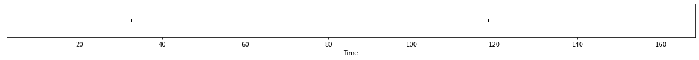
def amount_of_overlap(annotation: Annotation) -> float:
overlap = to_overlap(annotation)
return sum(segment.duration for segment, _ in overlap.itertracks()) amount_of_overlap(aepyx)3.3899999999999864def with_collar(annotation: Annotation) -> Annotation:
from pyannote.metrics.diarization import DiarizationErrorRate
metric = DiarizationErrorRate()
return metric.uemify(annotation, annotation, collar=0.5)[0]with_collar(aepyx)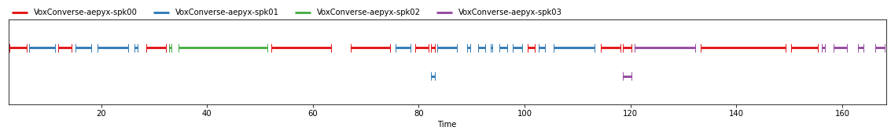
amount_of_overlap(with_collar(aepyx))2.329999999999984raw_overlap = sum(amount_of_overlap(reference) for _, reference in voxconverse.items())
raw_overlap4283.1200000000035overlap_with_collar = sum(amount_of_overlap(with_collar(reference)) for _, reference in voxconverse.items())
overlap_with_collar2031.489999999998def amount_of_speech(annotation: Annotation) -> float:
return sum(segment.duration for segment, _ in annotation.itertracks())raw_speech = sum(amount_of_speech(reference) for _, reference in voxconverse.items())
raw_speech144792.88speech_with_collar = sum(amount_of_speech(with_collar(reference)) for _, reference in voxconverse.items())
speech_with_collar/Users/hbredin/miniconda3/envs/pyannote/lib/python3.9/site-packages/pyannote/metrics/utils.py:200: UserWarning: 'uem' was approximated by the union of 'reference' and 'hypothesis' extents.
warnings.warn(130955.40999999993raw_ratio = raw_overlap / raw_speech
print(f"{100*raw_ratio:.2f}%")2.96%
{{raw_ratio}}
ratio_with_collar = overlap_with_collar / speech_with_collar
print(f"{100*ratio_with_collar:.2f}%")1.55%
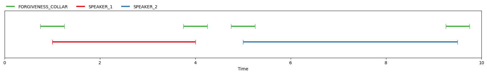